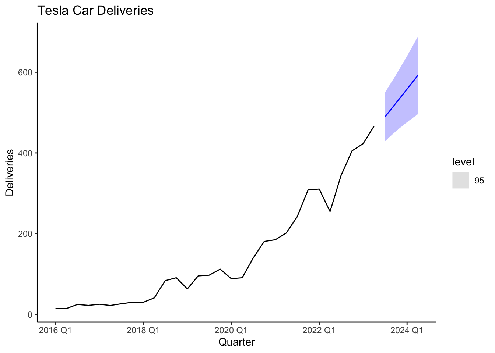

library(fpp3)
# Create tsibble
tesla<-tsibble(
period=yearquarter(c("2016:Q1","2016:Q2","2016:Q3","2016:Q4",
"2017:Q1","2017:Q2","2017:Q3","2017:Q4",
"2018:Q1","2018:Q2","2018:Q3","2018:Q4",
"2019:Q1","2019:Q2","2019:Q3","2019:Q4",
"2020:Q1","2020:Q2","2020:Q3","2020:Q4",
"2021:Q1","2021:Q2","2021:Q3","2021:Q4",
"2022:Q1","2022:Q2","2022:Q3","2022:Q4",
"2023:Q1","2023:Q2")),
deliveries=c(14.8,14.4,24.5,22.2,
25,22,26.2,29.9,
30,40.7,83.5,90.7,
63,95.2,97,112,
88.4,90.7,139.3,180.6,
184.82,201.25,241.3,308.6,
310.5,254.7,343.8,405.3,
422.9,466.1),
index=period # This is the time variable
)6 ETS
6.1 Predicting Tesla’s Deliveries
Deliveries are a carefully watched number by Tesla shareholders and are the closest approximation of sales disclosed by the company. Additionally, Tesla’s deliveries are closely followed due to their impact on financial markets, the EV industry, innovation and disruption, production efficiency, and the growth of the EV market. The numbers serve as a key performance indicator for Tesla’s success and provide insights into the broader trends in the electric vehicle industry. Can we use the ETS model to forecast Tesla’s deliveries?
6.2 The Data
The data can be found here [Tesla]https://ir.tesla.com/#quarterly-disclosure. Below is code that inputs the data as a tsibble in R.
As you can see the tsibble is created with the tsibble() function included in the fpp3 package. A time variable must be included and then defined using the index parameter. The yearquarter() function from the lubridate package is used to coerce the data to a date. With the data loaded we can now create a test and training set.
train_tesla<-filter_index(.data=tesla,"2016 Q1"~"2021 Q4")
test_tesla<-filter_index(.data=tesla,"2022 Q1"~"2023 Q2")There is no fixed rule for determining the length of the train and test sets. In this example, it is important to allocate a sufficiently large portion of the dataset to the training set to capture the underlying patterns and trends of Tesla’s deliveries. The sets are easily created using the filter_index() function and specifying the data set, and the particular dates.
6.3 Models
Four models will be estimated based on ETS. The first one is the Simple Exponential Smoothing model with additive errors, the Holt model that includes an additive trend, a dampened trend model and finally an algorithmic function that selects the best ETS model.
Model selection will be done with cross validation. Recall, that the the stretch_tsibble() function reshapes the tsibble to accommodate for cross validation. The .init parameter sets the first eight observations to estimate our initial model. The cross validation is done four periods ahead and accuracy measures are created by comparing forecasts to the test set.
library(gt)
tesla %>% stretch_tsibble(.init = 8) %>%
model(SES=ETS(deliveries ~ error("A") + trend("N") + season("N")),
HOLT=ETS(deliveries ~ error("A") + trend("A") + season("N")),
DAMPED=ETS(deliveries ~ error("A") + trend("Ad") + season("N")),
ALGO=ETS(deliveries))%>%
forecast(h = 4) %>%
accuracy(tesla) %>% gt()| .model | .type | ME | RMSE | MAE | MPE | MAPE | MASE | RMSSE | ACF1 |
|---|---|---|---|---|---|---|---|---|---|
| ALGO | Test | 46.20853 | 65.74141 | 51.90073 | 22.384295 | 27.26546 | 0.8588461 | 0.8288364 | 0.4510376 |
| DAMPED | Test | 25.49076 | 62.02236 | 49.22113 | 8.870067 | 30.18230 | 0.8145044 | 0.7819484 | 0.6957774 |
| HOLT | Test | 21.85193 | 62.18358 | 50.08818 | 5.474445 | 31.69801 | 0.8288522 | 0.7839810 | 0.7060137 |
| SES | Test | 48.48669 | 68.99360 | 53.79393 | 23.216494 | 27.76125 | 0.8901745 | 0.8698385 | 0.4713775 |
The accuracy measures reveal that the DAMPED and HOLT models perform best. If one believes that Tesla deliveries will continue to grow at about the same pace, the HOLT model would probably be the best choice. Below, we will continue with the DAMPED model and assume that Tesla’s growth will taper off into the future. Below, the DAMPED model is estimated and the parameters are revealed by using the tidy() function.
fit <- tesla %>%
model(
DAMPED = ETS(deliveries ~ error("A") + trend("Ad") + season("N"))
)
tidy(fit)# A tibble: 5 × 3
.model term estimate
<chr> <chr> <dbl>
1 DAMPED alpha 0.491
2 DAMPED beta 0.150
3 DAMPED phi 0.980
4 DAMPED l[0] 11.2
5 DAMPED b[0] 2.52 6.4 Forecast
Forecasts are created by using the fit object. We will forecast four quarters ahead using the forecast() function. The code below generate a table with the forecasts.
library(gt)
fit %>%
forecast(h = 4) %>% gt()| .model | period | deliveries | .mean |
|---|---|---|---|
| DAMPED | 2023 Q3 | N(488, 1017) | 487.9805 |
| DAMPED | 2023 Q4 | N(520, 1431) | 520.3249 |
| DAMPED | 2024 Q1 | N(552, 2052) | 552.0224 |
| DAMPED | 2024 Q2 | N(583, 2918) | 583.0860 |
The model predicts Tesla to continue continue it’s trend and increase its deliveries every quarter. For the third quarter of 2023, Tesla is expected to deliver about 488,000 cars. The plot below nicely illustrates how the model expects Tesla to continue its upward trend.
fit %>%
forecast(h = 4) %>%
autoplot(tesla, level=95)+
labs(x="Quarter", y="Deliveries",
title = "Tesla Car Deliveries") + theme_classic()
6.5 Readings
Hyndman (2021) Chapter 8 (Exponential Smoothing).
6.6 Leasons Learned
In this module you have been introduced to ETS model. Particularly you have learned to:
Use the
model()andETS()functions to estimate the model.Identify when ETS model is superior to Benchmarks or the ARIMA model using the
accuracy()function.Forecast time series with the ETS model.